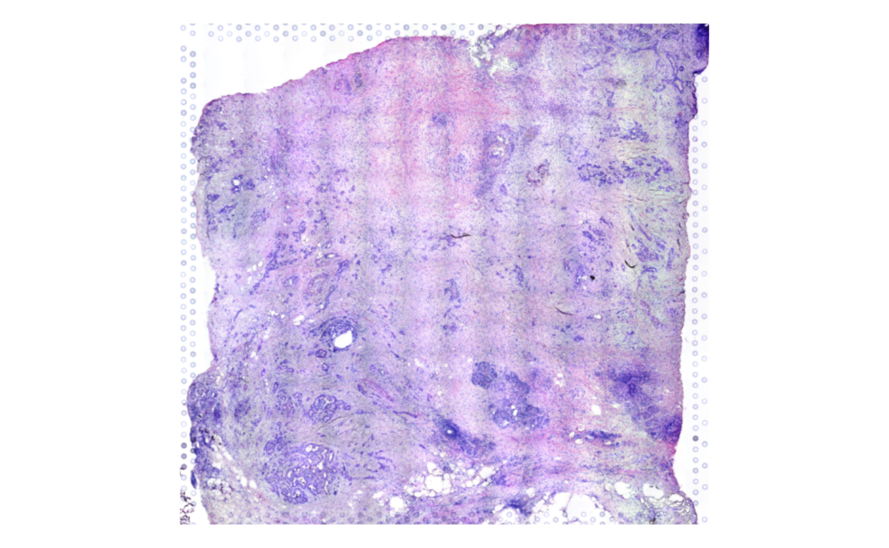
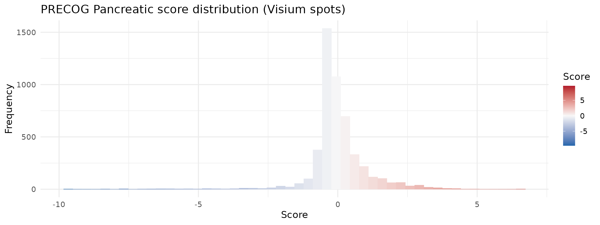
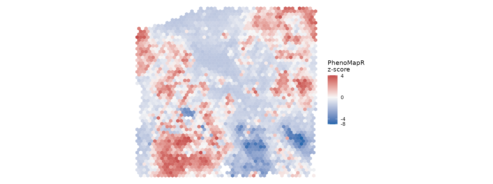
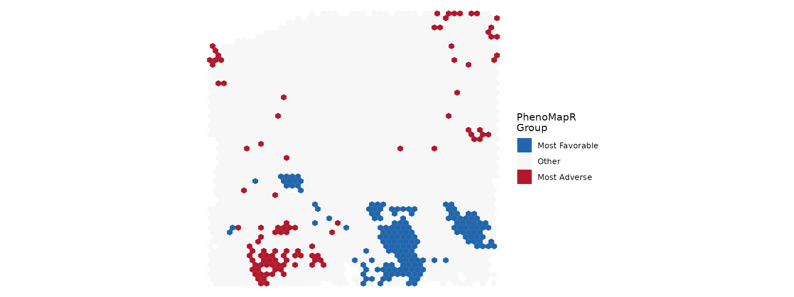
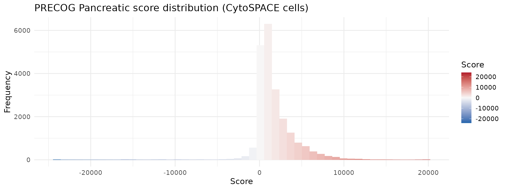
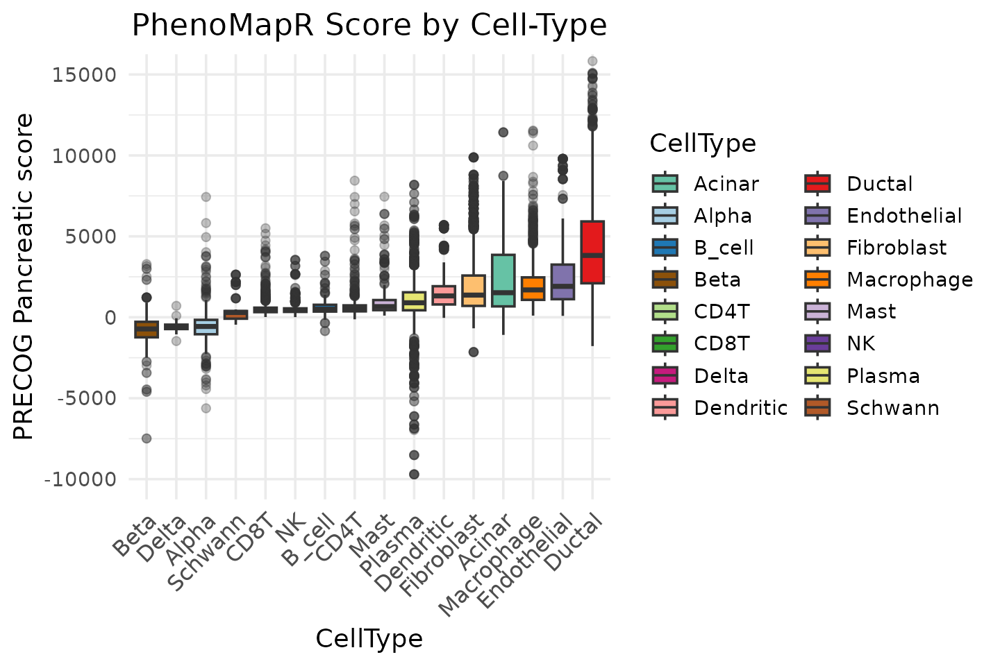
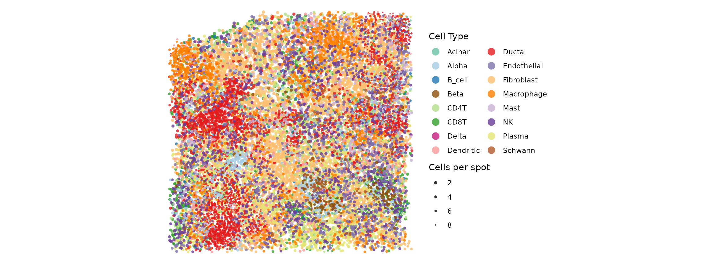
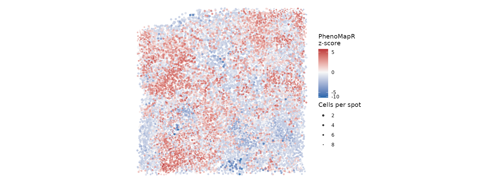
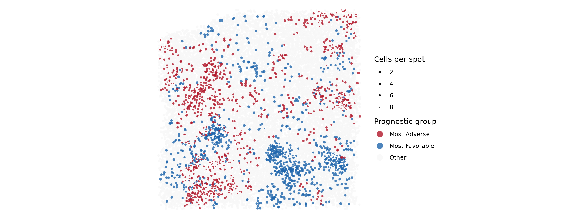

Scoring spatial transcriptomics data with PhenoMapR
Source:vignettes/spatial-transcriptomics.Rmd
spatial-transcriptomics.RmdOverview
This vignette demonstrates {PhenoMapR} on spatial
transcriptomics in two parts. Part 1 uses
spot-level 10X Visium data
(HT270P1-S1H2Fc2U1Z1Bs1-H2Bs2-Test.hgnc.rds): we show the
H&E with SpatialPlot, then score with
PRECOG Pancreatic and map z-scaled
scores with stat_summary_hex (same
coordinates and aspect as H&E; no jitter). Part 2
uses the same sample after CytoSPACE
mapped single cells onto spots
(HT270P1-S1H2Fc2U1Z1Bs1-H2Bs2-Test_processed.rds); we then
mirror the single-cell workflow (score by cell type, markers, heatmaps)
at cell resolution and assess
co-localization of prognostic groups with spatialCooccur
(nhood_enrichment(),
cooccur_local()).
The sample is from a pancreatic cancer dataset available from HTAN.
Download data and vizualize H&E histology
suppressPackageStartupMessages({
library(PhenoMapR)
library(Seurat)
library(SeuratObject)
library(ggplot2)
library(dplyr)
})
knitr::opts_chunk$set(fig.width = 12, out.width = "100%", warning = FALSE)
theme_set(theme_minimal(base_size = 14))
options(googledrive_quiet = TRUE)
googledrive::drive_deauth()
gd_id_spot <- "1OkIr7ksAWxKVjtdlGqYHMidvHZZsySEE"
rds_spot <- "HT270P1-S1H2Fc2U1Z1Bs1-H2Bs2-Test.hgnc.rds"
googledrive::drive_download(googledrive::as_id(gd_id_spot), rds_spot, overwrite = TRUE)
seurat_spot <- readRDS("HT270P1-S1H2Fc2U1Z1Bs1-H2Bs2-Test.hgnc.rds")
SpatialPlot(object = seurat_spot,
features = NULL,
image.alpha = 1,
pt.size.factor = 0) +
guides(fill = "none") 
Score spots with PhenoMapR
# Score spots
scores_spot <- PhenoMapR::PhenoMap(
expression = seurat_spot,
reference = "precog",
cancer_type = "Pancreatic",
assay = "Spatial",
slot = "data",
verbose = FALSE
)
# Add scores to Seurat object
seurat_spot <- PhenoMapR::add_scores_to_seurat(seurat_spot, scores_spot)
score_col_spot <- grep("weighted_sum_score", names(scores_spot), value = TRUE)[1]
## Z-scaled PhenoMapR score on spots (for hex / metadata plots)
sc_sp <- suppressWarnings(as.numeric(seurat_spot@meta.data[[score_col_spot]]))
seurat_spot$phenomapr_scaled_spot <- as.numeric(scale(sc_sp))
plot_score_distribution(
seurat_spot$phenomapr_scaled_spot,
main = "PRECOG Pancreatic score distribution (Visium spots)",
base_size = 14
)
PhenoMapR score distribution across spots
p <- SpatialPlot(
object = seurat_spot,
features = "weighted_sum_score_Pancreatic", image.alpha = 0
)
cols_pheno <- grDevices::colorRampPalette(c("#2166AC", "#F7F7F7", "#B2182B"))(100)
df <- p$data # extract data from SpatialPlot
spot_hex_bins <- max(10, min(50L, as.integer(round(sqrt(nrow(df))))))
ggplot(df, aes(
x = x,
y = -y,
z = scale(weighted_sum_score_Pancreatic)
)) +
stat_summary_hex(fun = mean, bins = spot_hex_bins) +
scale_fill_gradient2(
low = "#2166AC",
mid = "#F7F7F7",
high = "#B2182B",
midpoint = 0,
trans = scales::pseudo_log_trans(sigma = 0.2),
# limits = c(-4, 4),
name = "PhenoMapR\nz-score"
)+
coord_fixed() +
theme_void()
df <- SpatialPlot(
object = seurat_spot,
features = "weighted_sum_score_Pancreatic", image.alpha = 0
)$data %>%
as.data.frame()
groups_spot <- PhenoMapR::define_phenotype_groups(df, score_columns = "weighted_sum_score_Pancreatic", percentile = 0.05)
df <- left_join(df, groups_spot, by = c("cell" = "cell_id"))
# Helper function for mode
mode_val <- function(z) {
z <- z[is.finite(z)]
if (!length(z)) return(NA_real_)
as.numeric(names(sort(table(z), decreasing = TRUE)[1L]))
}
ggplot(df, aes(
x = x,
y = -y,
z = as.numeric(factor(
phenotype_group_weighted_sum_score_Pancreatic,
levels = c("Most Favorable", "Other", "Most Adverse")
))
)) +
stat_summary_hex(
aes(
fill = after_stat(factor(
value,
levels = 1:3,
labels = c("Most Favorable", "Other", "Most Adverse")
))
),
bins = 50,
fun = mode_val,
colour = NA
) +
scale_fill_manual(
values = c(
"Most Favorable" = "#2166AC",
"Other" = "#F7F7F7",
"Most Adverse" = "#B2182B"
),
drop = FALSE,
name = "PhenoMapR\nGroup"
) +
coord_fixed() +
theme_void()
Here, we can see that the most favorable spots seem to cluster together, while a subset of the most adverse also tend to co-localize.Part 2: CytoSPACE-mapped cells
Load the CytoSPACE object (single cells placed on Visium coordinates).
rds_cyto <- "HT270P1-S1H2Fc2U1Z1Bs1-H2Bs2-Test_processed.rds"
gd_id_cyto <- "1gcOyLriW9bIFNbDuQN6Vi1UsrMGKDxll"
googledrive::drive_download(googledrive::as_id(gd_id_cyto), rds_cyto, overwrite = TRUE)
seurat <- readRDS(rds_cyto)Score sample with PhenoMapR (CytoSPACE)
scores_spatial <- PhenoMapR::PhenoMap(
expression = seurat,
reference = "precog",
cancer_type = "Pancreatic",
assay = "Spatial",
slot = "data",
verbose = FALSE
)
seurat <- PhenoMapR::add_scores_to_seurat(seurat, scores_spatial)
score_col <- grep("weighted_sum_score", names(scores_spatial), value = TRUE)[1]
plot_score_distribution(
seurat@meta.data[[score_col]],
main = "PRECOG Pancreatic score distribution (CytoSPACE cells)",
base_size = 14
)
Score by cell type
Before looking at any spatial information, we plot the PhenoMapR score by cell type to see cell types most enriched in the adverse and favorable prognostic groups.
spatial_celltype_pal <- NULL
spatial_celltype_col <- NULL
meta_names <- names(seurat@meta.data)
celltype_col <- "CellType"
df <- seurat@meta.data
n_meta <- nrow(df)
ann_vec <- NULL
if (!is.null(celltype_col)) {
raw <- df[[celltype_col]]
if (is.list(raw)) {
ann_vec <- vapply(raw, function(x) if (is.null(x) || length(x) == 0) NA_character_ else as.character(x)[1], character(1))
} else {
ann_vec <- as.vector(raw)
}
if (length(ann_vec) != n_meta) ann_vec <- NULL
}
df$annotation <- factor(ann_vec, exclude = NULL)
pal <- PhenoMapR::get_celltype_palette(levels(df$annotation))
print(ggplot(df, aes(
x = reorder(.data$annotation, .data[[score_col]], FUN = median),
y = .data[[score_col]],
fill = .data$annotation
)) +
geom_boxplot(outlier.alpha = 0.3) +
scale_fill_manual(values = pal, name = celltype_col) +
coord_cartesian(ylim = c(-10000, 15000)) +
guides(fill = guide_legend(ncol = 2)) +
theme_minimal(base_size = 14) +
theme(
axis.text.x = element_text(angle = 45, hjust = 1, size = 12),
legend.position = "right",
plot.title = element_text(hjust = 0.5)
) +
labs(y = "PRECOG Pancreatic score", x = celltype_col, title = "PhenoMapR Score by Cell-Type"))
As seen in the other pancreatic cancer vignettes, the ductal cell type is the most associated with the adverse prognostic signal, while the beta and delta cells are most associated with favorable signal. Interestingly, plasma cells show quite a wide range of score and contain some of the most favorably prognostic cells across the sample.Where are the different cell types?
Here, we use the coordinates information from the spatial seurat object and pair them with the cell level metadata in order to plot the results in spatial context.
cell_locations <- seurat@meta.data %>%
as.data.frame() %>%
dplyr::select("Cell", "row", "col",
"CellType", "weighted_sum_score_Pancreatic") %>%
group_by(.data$row, .data$col) %>%
mutate(points_per_location = n()) %>%
ungroup()
cell_locations$CellType <- as.factor(cell_locations$CellType)
# Shared jitter and point size so all three spatial plots match (multiple cells per spot)
rng_row <- diff(range(cell_locations$row, na.rm = TRUE))
rng_col <- diff(range(-cell_locations$col, na.rm = TRUE))
spatial_jitter_w <- max(0.25, if (rng_row > 0) rng_row * 0.025 else 0.15)
spatial_jitter_h <- max(0.25, if (rng_col > 0) rng_col * 0.025 else 0.15)
spatial_point_range <- c(0.5, 1.6)
spatial_celltype_pal <- PhenoMapR::get_celltype_palette(levels(cell_locations$CellType))
ct_freq <- sort(table(cell_locations$CellType, useNA = "no"), decreasing = TRUE)
ct_order <- names(ct_freq)
cell_locations$celltype_zorder <- as.numeric(factor(as.character(cell_locations$CellType), levels = ct_order))
ct_pal <- if (!is.null(spatial_celltype_pal)) spatial_celltype_pal else PhenoMapR::get_celltype_palette(levels(cell_locations$CellType))
ggplot(cell_locations, aes(x = .data$row, y = -.data$col, color = .data$CellType,
size = points_per_location, zorder = .data$celltype_zorder)) +
geom_jitter(alpha = 0.8, width = spatial_jitter_w, height = spatial_jitter_h, shape = 16) +
scale_color_manual(values = ct_pal, name = "Cell Type", na.value = "grey90") +
scale_size_continuous(range = spatial_point_range, trans = "reverse", name = "Cells per spot") +
guides(
color = guide_legend(override.aes = list(size = 4), ncol = 2)
# size = guide_legend(override.aes = list(size = 4))
) +
theme_minimal(base_size = 14) +
theme(
plot.title = element_blank(),
axis.text = element_blank(),
axis.ticks = element_blank(),
axis.title = element_blank()
) +
coord_fixed(ratio = 0.6) +
theme_void()
Where raw PhenoMapR scores are
Spatial map of PhenoMapR score (z-scaled for color gradient). Blue = more favorable, red = more adverse.
cell_locations <- cell_locations[order(abs(cell_locations$weighted_sum_score_Pancreatic)), ]
ggplot(cell_locations, aes(
x = .data$row,
y = -.data$col,
color = scale(weighted_sum_score_Pancreatic),
size = .data$points_per_location
)) +
geom_jitter(alpha = 0.8, width = spatial_jitter_w, height = spatial_jitter_h, shape = 16) +
scale_size_continuous(range = spatial_point_range, trans = "reverse", name = "Cells per spot") +
scale_color_gradient2(
low = "#2166AC", mid = "#F7F7F7", high = "#B2182B",
midpoint = 0,
trans = scales::pseudo_log_trans(sigma = 0.2),
name = "PhenoMapR\nz-score"
) +
coord_fixed(ratio = 0.6) +
theme_void()
Where 5th percentile cells are
In order to make the visualization more apparent, we restrict the spatial map of prognostic groups to: top 5% (Most Adverse), bottom 5% (Most Favorable), and the rest (Other).
cell_locations <- cell_locations %>%
mutate(percentile = percent_rank(weighted_sum_score_Pancreatic)) %>%
mutate(prognostic_group = case_when(
percentile < 0.05 ~ "Most Favorable",
percentile >= 0.95 ~ "Most Adverse",
TRUE ~ "Other"
))
df_other <- cell_locations %>%
dplyr::filter(prognostic_group=="Other")
df_extreme <- cell_locations %>%
dplyr::filter(prognostic_group!="Other")
ggplot() +
geom_jitter(data = df_other, aes(x = .data$row, y = -.data$col, color = .data$prognostic_group,
size = points_per_location), alpha = 0.8, width = spatial_jitter_w, height = spatial_jitter_h, shape = 16) +
geom_jitter(data = df_extreme, aes(x = .data$row, y = -.data$col, color = .data$prognostic_group,
size = points_per_location), alpha = 0.8, width = spatial_jitter_w, height = spatial_jitter_h, shape = 16) +
# ggtitle("5th percentile: Most Adverse vs Most Favorable") +
scale_color_manual(
values = c(`Most Adverse` = "#B2182B", Other = "#f7f7f7", `Most Favorable` = "#2166AC"),
name = "Prognostic group",
na.value = "grey90",
drop = FALSE
) +
guides(
color = guide_legend(override.aes = list(size = 4))
# size = guide_legend(override.aes = list(size = 4))
) +
scale_size_continuous(range = spatial_point_range, trans = "reverse", name = "Cells per spot") +
theme_minimal(base_size = 14) +
theme(
plot.title = element_text(hjust = 0.5, size = 14),
axis.text = element_blank(),
axis.ticks = element_blank(),
axis.title = element_blank()
) +
coord_fixed(ratio = 0.6) +
theme_void()